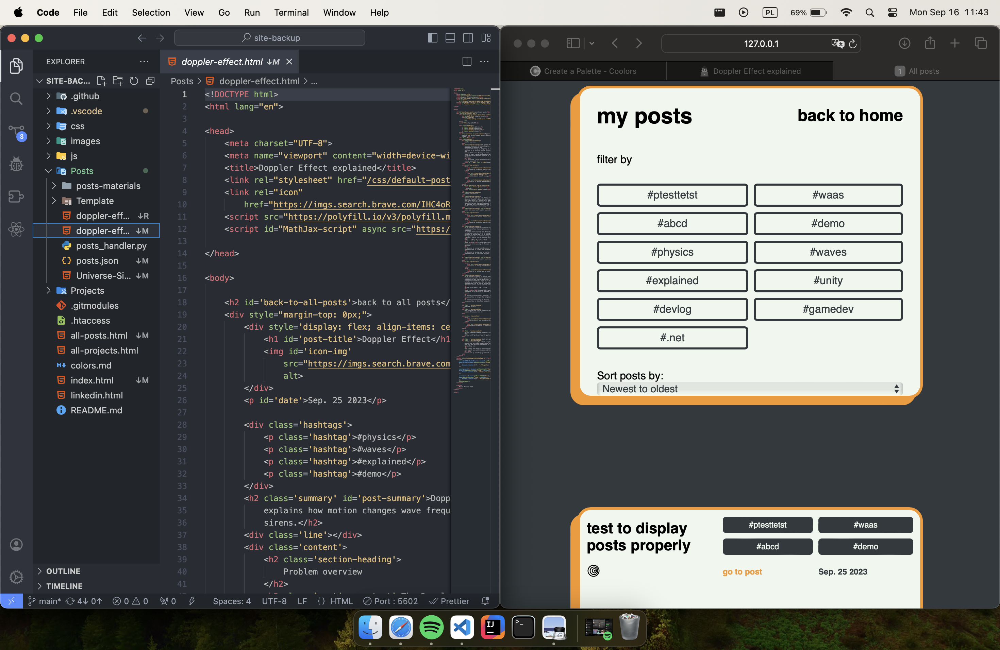

Sep. 16 2024
Why did I decide to rebuild my website?
I decided to rebuild my site because the old design no longer reflected my current skills—it was created
back when I was
just learning HTML, CSS, and JavaScript. Plus, I wanted to test out my new MacBook and get a fresh,
updated site ready
before starting university. Most importantly, it was a great opportunity to continue learning and
refining my
development skills.
Design changes overview
home page design before
home page design after
The homepage has changed a lot. I wanted to achieve a more minimalist look for the site, with a slightly
more modern
design. I didn't like the "blocky" look of the old design and disliked the colors. I managed to choose a
great,
minimalist brownish color palette that I love. It became clear that sometimes "less" content is better,
not only in
terms of design and aesthetics but also for improved readability.

all posts design before
all posts design after
The old design of the "All Posts" page looked terrible. There was too much content on the screen, most
of which was
useless for the user. I decided to make it more minimalist and readable, and I was really amazed by how
it turned out. I
improved not only the look but also the readability. The color palette now matches the rest of the
site's colors. I also
added a navbar, which is an essential part of my site, and ensured the overall design remained
consistent with the rest
of the page.
post design before
post design after
The look of the posts didn't change much, as it was the most recent element. I updated the color
palette, adjusted some
font sizes, and added a maximum width for images.
Also I centered post content on site and made it to
not cover whole page on bigger screens.
Technologies overview
I'm quite proud to say that I didn't use any frameworks for my site. It's 100% handmade, from the post
system to the
entire design. It was a great experience for me to challenge myself and improve my web design skills.
I always wanted to have a blog section on my personal site. I didn't like that everyone uses frameworks
like Blowfish.
There's nothing wrong with that, but I have a scientific mindset, and I love to invent and create my own
things. So, I
did the same here! I created my own post system — maybe a bit unusual, maybe not so fancy, but hey! It's
mine!
project directory
posts_handler.py
github actions
I didn't want to host anything on external clouds. I wanted to build the post system entirely on GitHub.
So, I thought
maybe there was a way to run Python on GitHub remotely — and there is! I created a GitHub workflow
script
that checks for
any changes in the Posts/ directory. If changes are detected, it runs a simple
posts_handler.py script.
This script
retrieves all files with the .html extension in the Posts/
directory and adds their
paths to posts.json,
which contains
all the posts. When any page containing posts is loaded, it fetches the post data and displays it. All
posts follow the
same format, so processing them is straightforward. Pure JavaScript couldn't check directories on the
site or retrieve
all the files from Posts/ because it's website-based. That's why we needed Python!
Process overview
I started by looking for inspiration online. I visited some sites hosted by other developers to see how
they built their
personal sites. I noticed that I prefer a minimalist look over some modern sites with a lot of content.
Then I chose a
color palette using Coolors (a site for picking color palettes,
you can see the palette I used here).
After that, I
began the redesign. It took a long time to implement all the changes, but it was worth it. Here, you can
see some
progress I documented for the redesign of the "All Posts" page.
first steps, change of colors and changed display to row/column depend on screen size
made it look better, almost like I wanted, added basic styling for posts and for filter options
added navbar
changed filter options look
added padding to all the content to get some margins on the edges
Rebuilding my personal site has been a challenging but incredibly rewarding experience. From redesigning
the layout to
building a custom post system, I've learned so much along the way. The process pushed me to refine my
skills, experiment
with new ideas, and make something that truly reflects my vision. I’m proud of the final result, and I
hope it showcases
not just my technical abilities but also my personal style. This site will continue to evolve, and I
look forward to
adding even more features and improvements in the future. Thanks for following along with the journey!